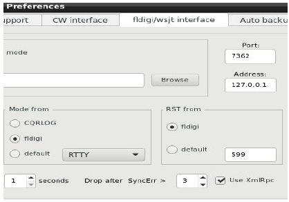
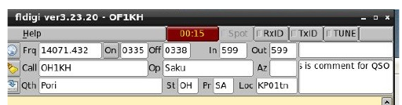
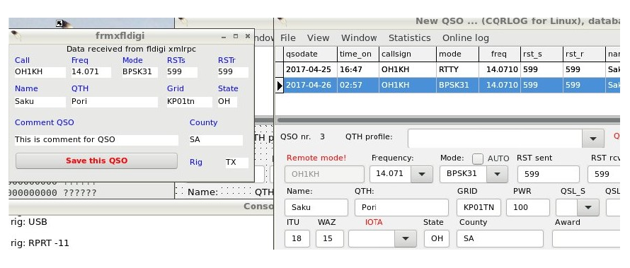

|
WARNING! Backup your data often! BACKUP your log directory at the end of EVERY session! All that you need to backup and store in a safe place is the log database directory located in the ~/.config/cqrlog/database folder, or you can enable the autobackup function in Preferences. This autobackup function creates an ADIF file with a backup of your log. /td> |
| < Prev | [Menu] | Next > |

XmlRpc remote connection to fldigi is an alternative way to transfer qso data to cqrlog. With XmlRpc cqrlog acts as client what is opposite way compared to wsjt-x remote where cqrlog acts like server. Because of this cqrlog can not know if “save to log” button is pressed at fldigi because it tells it’s information only when asked. This leads to situation where fldigi logging can not be used to act like indicator to cqrlog to save qso and saving must be done by operator on cqrlogs side.
There are two ways to save qso:
When using XmlRPC:

In cqrlog’s preferences/fldigi/wsjt interface there are some new settings. Port and Address for fldigi network connection and
selection to use XmlRpC.With selection you can choose “the old way” for fldigi remote, or the XmlRpc way. Port number should be ok, but IP address may change depending your needs.
Address is normally 127.0.0.1 (localhost) if you run fldigi on same PC than cqrlog.
If you have fldigi running on other PC put here the IP address of fldigi-PC. There is no IP address validation, so you have to type correctly formatted
address.
If you use fldigi on other PC remember to open firewall at fldigi-PC side for TCP traffic to port 7362 from your local network.
Parameter "Drop after SyncErr >" automates remote mode closing when fldigi is closed. But as it may affect also (in slow PCs) fldigi started by cqrlog it can be changed. 0 disables, 1-20 means timer rounds until drop. When closing happens it leaves text "Socket error, check fldigi!" to NewQSO field "Comment QSO".
In all cases fldigi must be started from command line with parameter: fldigi --xmlrpc-server-port 7362 When closing fldgi properly and answering YES to save setup changes the next start should open xmlrpc server without parameters from usual icon.

When you have activated fldigi remote and checked “Use XmlRpc” at preferences, texts that you type to
fldigi logging sheet (or select from monitor with right click) are transferred to cqrlog by polling fldigi with speed you have set on
preferences “Try to load QSO from fldigi every X seconds”.
When remote for fldigi is opened a new status form is shown. It shows data that have been received from
fldigi. If you can’t see any changes you have to check port and address settings (both fldigi and cqrlog) and firewall settings.
There is more information about XmlRpc
at:
http://www.w1hkj.com/FldigiHelp-3.21/html/xmlrpc_control_page.html
If everything is OK you should see something like this:

You can set preferences so that cqrlog will start fldigi and/or wsjt-x programs for you when you enter remote mode. This is very handy, but doing that has also one risk.
When fldigi or wsjt-x has been started as a child process of cqrlog they will die at the moment cqrlog crashes for some reason.
If you start them manually as processes of their own and then activate remote mode from cqrlog they keep on running if cqrlog
dies. You can finish your ongoing qso, start cqrlog again, set remote mode on and then log the qso in normal manner.
| < Prev | [Menu] | Next > |